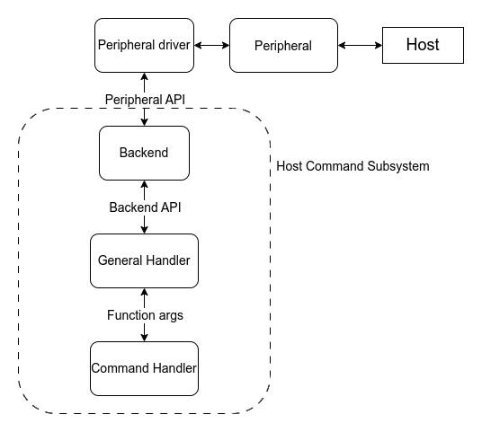
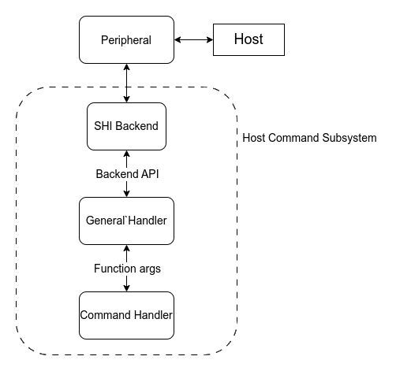

EC Host Command
Overview
The host command protocol defines the interface for a host, or application processor, to communicate with a target embedded controller (EC). The EC Host command subsystem implements the target side of the protocol, generating responses to commands sent by the host. The host command protocol interface supports multiple versions, but this subsystem implementation only support protocol version 3.
Architecture
The Host Command subsystem contains a few components:
Backend
General handler
Command handler
The backend is a layer between a peripheral driver and the general handler. It is responsible for sending and receiving commands via chosen peripheral.
The general handler validates data from the backend e.g. check sizes, checksum, etc. If the command is valid and the user has provided a handler for a received command id, the command handler is called.

SHI (Serial Host Interface) is different to this because it is used only for communication with a host. SHI does not have API itself, thus the backend and peripheral driver layers are combined into one backend layer.

Another case is SPI. Unfortunately, the current SPI API can’t be used to handle the host commands communication. The main issues are unknown command size sent by the host (the SPI transaction sends/receives specific number of bytes) and need to constant sending status byte (the SPI module is enabled and disabled per transaction). It forces implementing the SPI driver within a backend, as it is done for SHI. That means a SPI backend has to be implemented per chip family. However, it can be changed in the future once the SPI API is extended to host command needs. Please check the discussion.
That approach requires configuring the SPI dts node in a special way. The main compatible string of a SPI node has changed to use the Host Command version of a SPI driver. The rest of the properties should be configured as usual. Example of the SPI node for STM32:
&spi1 {
/* Change the compatible string to use the Host Command version of the
* STM32 SPI driver
*/
compatible = "st,stm32-spi-host-cmd";
status = "okay";
dmas = <&dma2 3 3 0x38440 0x03>,
<&dma2 0 3 0x38480 0x03>;
dma-names = "tx", "rx";
/* This field is used to point at our CS pin */
cs-gpios = <&gpioa 4 (GPIO_ACTIVE_LOW | GPIO_PULL_UP)>;
};
The STM32 SPI host command backend driver supports the st,stm32h7-spi and
st,stm32-spi-fifo variant implementations. To enable these variants, append the
corresponding compatible string. For example, to enable FIFO support and support for the STM32H7
SoCs, modify the compatible string as shown.
&spi1 {
compatible = "st,stm32h7-spi", "st,stm32-spi-fifo", "st,stm32-spi-host-cmd";
...
};
The chip that runs Zephyr is a SPI slave and the cs-gpios property is used to point our CS pin.
For the SPI, it is required to set the backend chosen node zephyr,host-cmd-spi-backend.
The supported backend and peripheral drivers:
Simulator
SHI - ITE and NPCX
eSPI - any eSPI slave driver that support
CONFIG_ESPI_PERIPHERAL_EC_HOST_CMDandCONFIG_ESPI_PERIPHERAL_CUSTOM_OPCODEUART - any UART driver that supports the asynchronous API
SPI - STM32
Initialization
If the application configures one of the following backend chosen nodes and
CONFIG_EC_HOST_CMD_INITIALIZE_AT_BOOT is set, then the corresponding backend
initializes the host command subsystem by calling ec_host_cmd_init():
zephyr,host-cmd-espi-backendzephyr,host-cmd-shi-backendzephyr,host-cmd-uart-backendzephyr,host-cmd-spi-backend
If no backend chosen node is configured, the application must call the ec_host_cmd_init()
function directly. This way of initialization is useful if a backend is chosen in runtime
based on e.g. GPIO state.
Buffers
The host command communication requires buffers for rx and tx. The buffers are be provided by the
general handler if CONFIG_EC_HOST_CMD_HANDLER_RX_BUFFER_SIZE > 0 for rx buffer and
CONFIG_EC_HOST_CMD_HANDLER_TX_BUFFER_SIZE > 0 for the tx buffer. The shared
buffers are useful for applications that use multiple backends. Defining separate buffers by every
backend would increase the memory usage. However, some buffers can be defined by a peripheral driver
e.g. eSPI. These ones should be reused as much as possible.
Logging
The host command has an embedded logging system of the ongoing communication. The are a few logging levels:
LOG_INFis used to log a command id of a new command and not success responses. Repeats of the same command are not loggedLOG_DBGlogs every command, even repeatsLOG_DBG+CONFIG_EC_HOST_CMD_LOG_DBG_BUFFERSlogs every command and responses with the data buffers